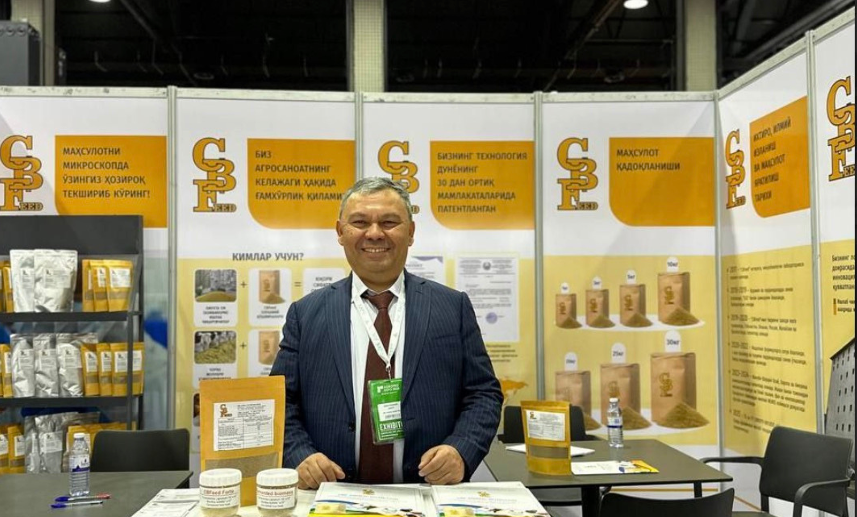

CBFeed: Натуральная кормовая добавка из рисовой шелухи для сельского хозяйства
О проекте
Проект CBFeed направлен на создание натуральной кормовой добавки на основе биоферментированной рисовой шелухи для удешевления кормления сельскохозяйственных животных и снижения зависимости от импортных кормовых компонентов.
Организация-грантополучатель
ООО «CBF Animal Nutrition»
Официальное название
Натуральная кормовая добавка из рисовой шелухи для сельского хозяйства
Код проекта
BIRD-01/22
Руководитель проекта
Аброр Дадаходжаев
Проблема и решение
Решаемые проблемы
- Резкий рост цен на корма и, как следствие, на мясо (до 70% себестоимости продукции)
- Высокая доля импортных кормовых добавок в Узбекистане, дороговизна и нестабильность поставок
- Проблема продовольственной безопасности из-за зависимости от импорта
- Неэффективное использование отходов рисовой промышленности
Цель проекта
Разработка и производство натуральной кормовой добавки CBFeed на основе биоферментированной рисовой шелухи, которая заменяет до 10-30% комбикорма и снижает затраты на корма до 20%.
Технологическое решение
Разработка и производство добавки CBFeed, которая заменяет до 10-30% комбикорма. Технология биоферментации рисовой шелухи, запатентованная в 2019 году (патент № ІАР 05799).
Ключевые особенности:
- Запатентованная технология биоферментации рисовой шелухи
- Снижение затрат на корма до 20%
- Прирост массы животных на 7-15%
- Улучшение конверсии корма на 10%
- Использование местного сырья и отходов производства
Текущий статус проекта
Технология разработана
Технология полностью разработана и запатентована
Успешные испытания
Проведены успешные пилотные испытания (85 000 голов бройлеров)
Опытное производство
Налажено опытное производство 300 тонн/мес в Ташкенте
Планы по развитию
Исследования и доработки
Разработка премиальных версий продукта CBFeed Forte. Оптимизация ферментационных процессов для повышения эффективности и снижения себестоимости.
Коммерциализация
- Привлечение $1,500,000 на расширение производства
- Увеличение объемов и расширение ассортимента продукции
- Начало экспортных поставок CBFeed в Казахстан и другие страны
Ожидаемые результаты
Краткосрочно (до 2028): $720,000 выручки в год. Создание устойчивой производственной базы с возможностью масштабирования.